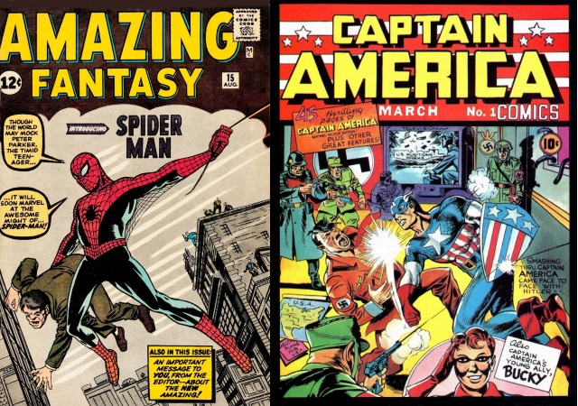

Marvel Worldwide, Inc conocida como Marvel Comics,es una editorial historietas estadounidense creada en 1939, inicialmente con el nombre de Timely Publications, Entre sus personajes emblemáticos del género superheroico se encuentran Spider-Man, Wolverine, X-Men, Capitán América, Iron Man, Hulk, Thor, Los 4 Fantásticos, Daredevil, Punisher, Los vengadores, entre otros. A partir de los años 1990, la compañía se posicionó como una de las principales editoriales de cómics del país. El 31 de agosto de 2009, The Walt Disney Company compró Marvel Entertainment por cerca de 4 000 millones de dólares, fusionándose con esta el 1 de enero de 2010
Entre 1957 y hasta 1968, Marvel Comics había sido una empresa con escasa organización interna. Stan Lee funcionaba como principal guionista, editor literario y artístico, mientras que el dibujante Sol Brodsky (sustituido posteriormente por John Verpoorten) se ocupaba de los aspectos más técnicos, como la redacción de contratos, control de las fechas de entrega y los contactos con la imprenta.31 No obstante, el aumento de la carga de trabajo de Lee y la mejora de las ventas permitió contratar a nuevos guionistas, dejando algunas de las series en manos de los jóvenes escritores Roy Thomas, Denny O'Neil y Gary Friedrich
| Nombre | Autor | Año | |
|---|---|---|---|
| Wonder Woman | L.D.Scott | 1979 | |
| The Incredible Hulk | Harrys Roberston | 1979 | |
| Spiderman | Freddy L. Richardson | 1976 | |
| Conan el bárbaro | J.L Philips | 1976 | |
| Doctor who | Anónimo | ||
| Superman | |||